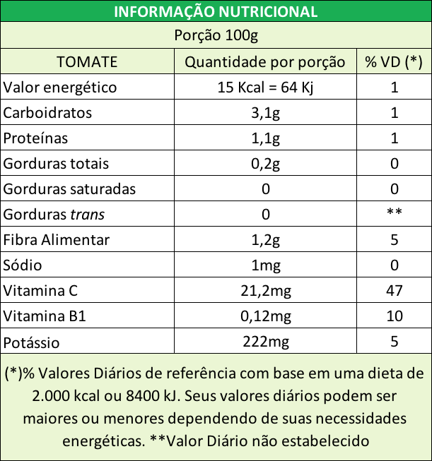

Tomate Comum Kg
R$ 10,90 kg
Compre AgoraInformações do Produto
Este tomate comum é 100% proveniente de pequenos agricultores familiares, comprometidos em trazer à sua mesa um produto de alta qualidade. Com uma polpa firme e suculenta, ele é perfeito para saladas frescas, molhos ricos e pratos diversos.
Gertrudes Rumpp
Gertrudes Rumpp é uma apaixonada produtora de tomates na Fazenda Boa Esperança, utilizando práticas sustentáveis para cultivar tomates frescos e suculentos.
Tabela Nutricional
Ingredientes
- Água: Cerca de 95% do tomate é água, o que contribui para sua suculência.
- Carboidratos: Representam aproximadamente 3-4%, principalmente na forma de açúcares naturais como glicose e frutose.
- Fibras: São cerca de 1-2%, importantes para a digestão.
Vitaminas: - Vitamina C: Essencial para o sistema imunológico e saúde da pele. - Vitamina K1: Importante para a coagulação sanguínea e saúde óssea. - Vitamina A: Presente como betacaroteno, essencial para a visão e saúde celular. - Vitamina B9 (folato): Crucial para a função celular e formação do DNA.
- Minerais: - Potássio: Essencial para a função muscular e nervosa. - Magnésio e Cálcio: Importantes para a saúde óssea e várias funções celulares.